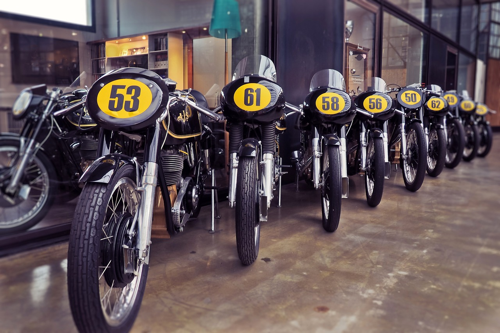
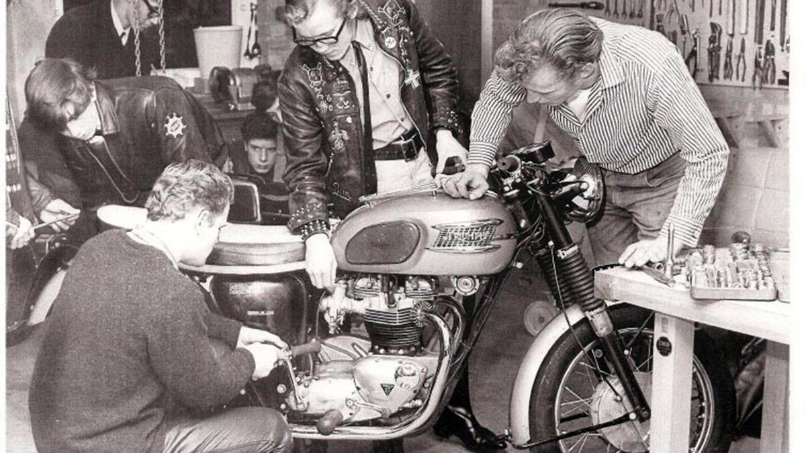

Somos una comunidad de amantes de las motocicletas clásicas que se reúne para compartir nuestra pasión por la historia de las dos ruedas. Nos encanta restaurar y mantener en buen estado motos de antaño y nos enorgullece mostrarlas al mundo.
Nuestro club fue fundado hace más de 20 años por un grupo de entusiastas que querían preservar el legado de las motocicletas de época. Desde entonces, hemos crecido hasta convertirnos en una de las organizaciones más grandes y activas de este tipo.
Nuestra membresía está compuesta por hombres y mujeres de todas las edades y orígenes, unidos por una pasión compartida por las motocicletas clásicas. Todos los miembros son bienvenidos, ya sean propietarios de una moto antigua o simplemente apasionados por la historia de estas bellezas mecánicas.
Ofrecemos una amplia variedad de actividades para nuestros miembros, como salidas en grupo, exhibiciones, ferias, competencias y viajes a lugares con rutas pintorescas y escénicas. Además, nuestro club organiza talleres y eventos educativos para ayudar a los miembros a aprender más sobre el mantenimiento y reparación de sus motocicletas antiguas.
¡Si eres un apasionado de las motos antiguas, te invitamos a unirte a nuestra comunidad! Juntos, podemos mantener viva la historia de las motocicletas de época y disfrutar de todo lo que estos icónicos vehículos tienen para ofrecer.
Comunicacion
Administracion
Organizacion
Experto Tecnico